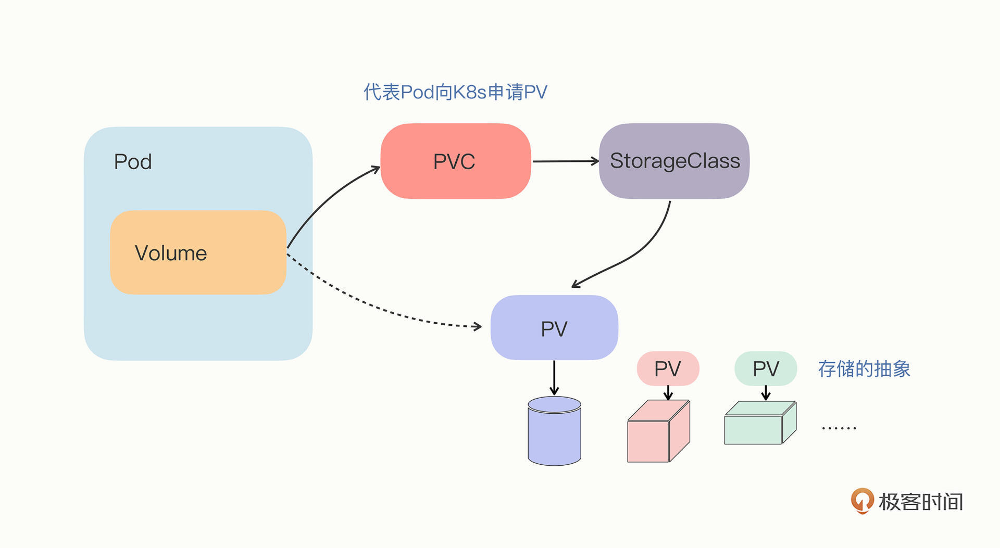
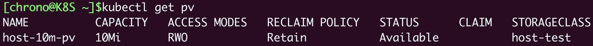
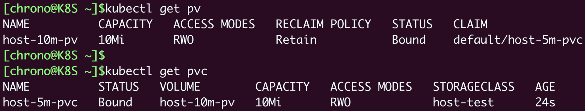
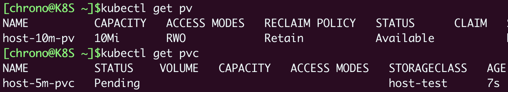
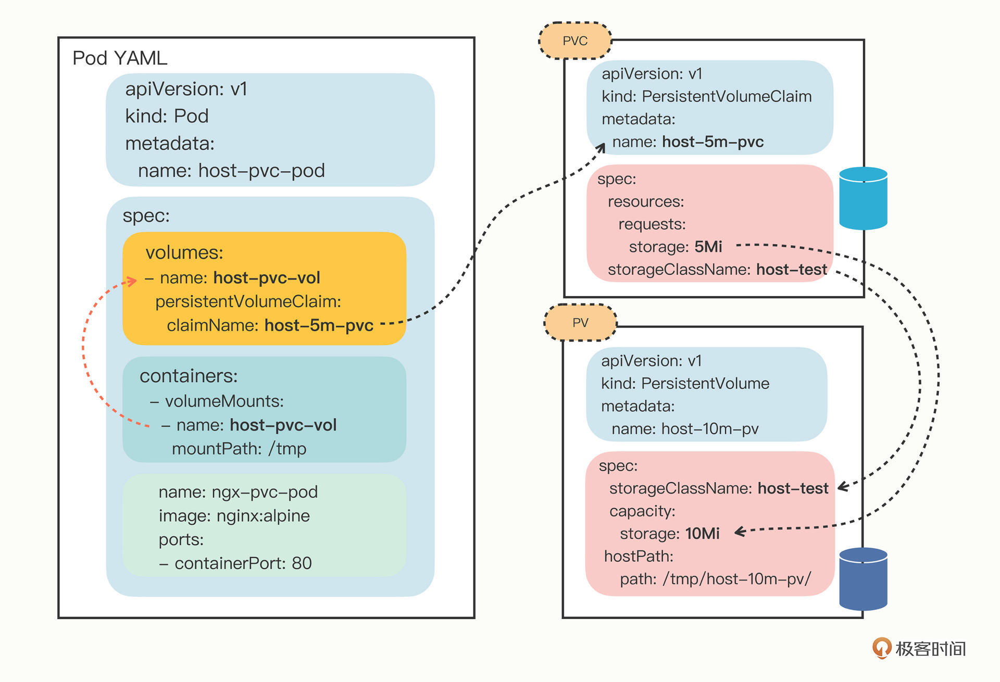
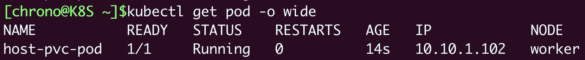
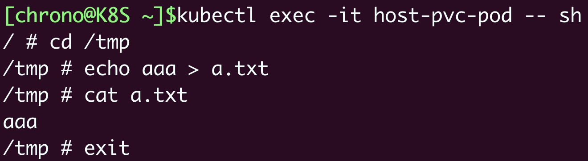
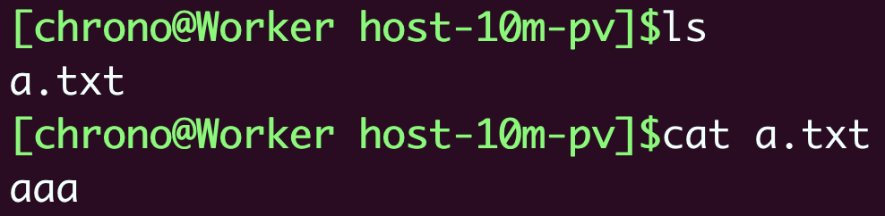
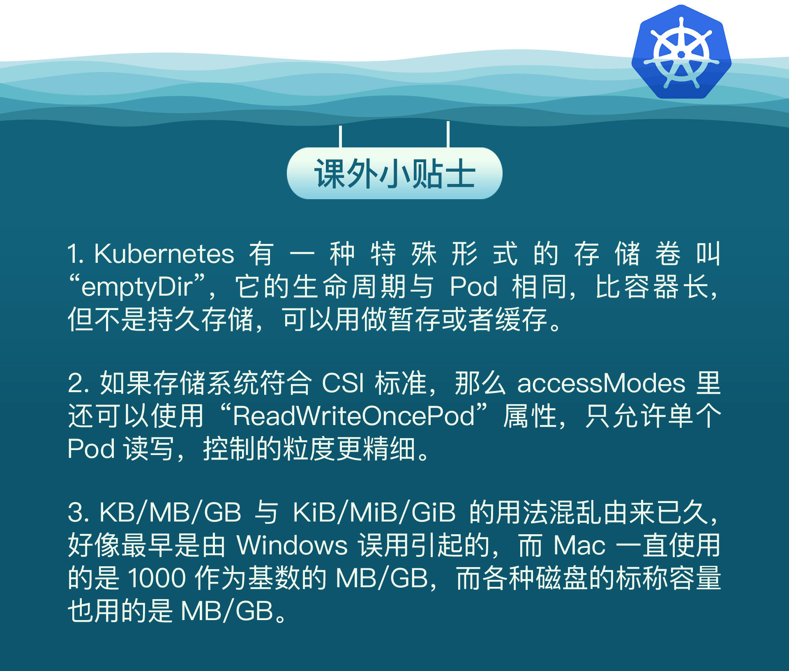

- 00 开篇词 迎难而上，做云原生时代的弄潮儿.md
- 00 课前准备 动手实践才是最好的学习方式.md
- 01 初识容器：万事开头难.md
- 02 被隔离的进程：一起来看看容器的本质.md
- 03 容器化的应用：会了这些你就是Docker高手.md
- 04 创建容器镜像：如何编写正确、高效的Dockerfile.md
- 05 镜像仓库：该怎样用好Docker Hub这个宝藏.md
- 06 打破次元壁：容器该如何与外界互联互通.md
- 07 实战演练：玩转Docker.md
- 08 视频：入门篇实操总结.md
- 09 走近云原生：如何在本机搭建小巧完备的Kubernetes环境.md
- 10 自动化的运维管理：探究Kubernetes工作机制的奥秘.md
- 11 YAML：Kubernetes世界里的通用语.md
- 12 Pod：如何理解这个Kubernetes里最核心的概念？.md
- 13 Job_CronJob：为什么不直接用Pod来处理业务？.md
- 14 ConfigMap_Secret：怎样配置、定制我的应用.md
- 15 实战演练：玩转Kubernetes（1）.md
- 16 视频：初级篇实操总结.md
- 17 更真实的云原生：实际搭建多节点的Kubernetes集群.md
- 18 Deployment：让应用永不宕机.md
- 19 Daemonset：忠实可靠的看门狗.md
- 20 Service：微服务架构的应对之道.md
- 21 Ingress：集群进出流量的总管.md
- 22 实战演练：玩转Kubernetes（2）.md
- 23 视频：中级篇实操总结.md
- 24 PersistentVolume：怎么解决数据持久化的难题？.md
- 25 PersistentVolume + NFS：怎么使用网络共享存储？.md
- 26 StatefulSet：怎么管理有状态的应用？.md
- 27 滚动更新：如何做到平滑的应用升级降级？.md
- 28 应用保障：如何让Pod运行得更健康？.md
- 29 集群管理：如何用名字空间分隔系统资源？.md
- 30 系统监控：如何使用Metrics Server和Prometheus？.md
- 31 网络通信：CNI是怎么回事？又是怎么工作的？.md
- 32 实战演练：玩转Kubernetes（3）.md
- 33 视频：高级篇实操总结.md
- 加餐 docker-compose：单机环境下的容器编排工具.md
- 加餐 谈谈Kong Ingress Controller.md
- 结束语 是终点，更是起点.md
24 PersistentVolume：怎么解决数据持久化的难题？
你好，我是Chrono。
经过了“初级篇”和“中级篇”的学习，相信你对Kubernetes的认识已经比较全面了，那么在接下来的“高级篇”里，我们再进一步，探索Kubernetes更深层次的知识点和更高级的应用技巧。
今天就先从PersistentVolume讲起。
早在[第14讲]介绍ConfigMap/Secret的时候，我们就遇到过Kubernetes里的Volume存储卷的概念，它使用字段 volumes 和 volumeMounts，相当于是给Pod挂载了一个“虚拟盘”，把配置信息以文件的形式注入进Pod供进程使用。
不过，那个时候的Volume只能存放较少的数据，离真正的“虚拟盘”还差得很远。
今天我们就一起来了解Volume的高级用法，看看Kubernetes管理存储资源的API对象PersistentVolume、PersistentVolumeClaim、StorageClass，然后使用本地磁盘来创建实际可用的存储卷。
什么是PersistentVolume
在刚完成的“中级篇”实战中（[22讲]），我们在Kubernetes集群里搭建了WordPress网站，但其中存在一个很严重的问题：Pod没有持久化功能，导致MariaDB无法“永久”存储数据。
因为Pod里的容器是由镜像产生的，而镜像文件本身是只读的，进程要读写磁盘只能用一个临时的存储空间，一旦Pod销毁，临时存储也就会立即回收释放，数据也就丢失了。
为了保证即使Pod销毁后重建数据依然存在，我们就需要找出一个解决方案，让Pod用上真正的“虚拟盘”。怎么办呢？
其实，Kubernetes的Volume对数据存储已经给出了一个很好的抽象，它只是定义了有这么一个“存储卷”，而这个“存储卷”是什么类型、有多大容量、怎么存储，我们都可以自由发挥。Pod不需要关心那些专业、复杂的细节，只要设置好 volumeMounts，就可以把Volume加载进容器里使用。
所以，Kubernetes就顺着Volume的概念，延伸出了PersistentVolume对象，它专门用来表示持久存储设备，但隐藏了存储的底层实现，我们只需要知道它能安全可靠地保管数据就可以了（由于PersistentVolume这个词很长，一般都把它简称为PV）。
那么，集群里的PV都从哪里来呢？
作为存储的抽象，PV实际上就是一些存储设备、文件系统，比如Ceph、GlusterFS、NFS，甚至是本地磁盘，管理它们已经超出了Kubernetes的能力范围，所以，一般会由系统管理员单独维护，然后再在Kubernetes里创建对应的PV。
要注意的是，PV属于集群的系统资源，是和Node平级的一种对象，Pod对它没有管理权，只有使用权。
什么是PersistentVolumeClaim/StorageClass
现在有了PV，我们是不是可以直接在Pod里挂载使用了呢？
还不行。因为不同存储设备的差异实在是太大了：有的速度快，有的速度慢；有的可以共享读写，有的只能独占读写；有的容量小，只有几百MB，有的容量大到TB、PB级别……
这么多种存储设备，只用一个PV对象来管理还是有点太勉强了，不符合“单一职责”的原则，让Pod直接去选择PV也很不灵活。于是Kubernetes就又增加了两个新对象，PersistentVolumeClaim和StorageClass，用的还是“中间层”的思想，把存储卷的分配管理过程再次细化。
我们看这两个新对象。
PersistentVolumeClaim，简称PVC，从名字上看比较好理解，就是用来向Kubernetes申请存储资源的。PVC是给Pod使用的对象，它相当于是Pod的代理，代表Pod向系统申请PV。一旦资源申请成功，Kubernetes就会把PV和PVC关联在一起，这个动作叫做“绑定”（bind）。
但是，系统里的存储资源非常多，如果要PVC去直接遍历查找合适的PV也很麻烦，所以就要用到StorageClass。
StorageClass的作用有点像[第21讲]里的IngressClass，它抽象了特定类型的存储系统（比如Ceph、NFS），在PVC和PV之间充当“协调人”的角色，帮助PVC找到合适的PV。也就是说它可以简化Pod挂载“虚拟盘”的过程，让Pod看不到PV的实现细节。

如果看到这里，你觉得还是差点理解也不要着急，我们找个生活中的例子来类比一下。毕竟和常用的CPU、内存比起来，我们对存储系统的认识还是比较少的，所以Kubernetes里，PV、PVC和StorageClass这三个新概念也不是特别好掌握。
看例子，假设你在公司里想要10张纸打印资料，于是你给前台打电话讲清楚了需求。
- “打电话”这个动作，就相当于PVC，向Kubernetes申请存储资源。
- 前台里有各种牌子的办公用纸，大小、规格也不一样，这就相当于StorageClass。
- 前台根据你的需要，挑选了一个品牌，再从库存里拿出一包A4纸，可能不止10张，但也能够满足要求，就在登记表上新添了一条记录，写上你在某天申领了办公用品。这个过程就是PVC到PV的绑定。
- 而最后到你手里的A4纸包，就是PV存储对象。
好，大概了解了这些API对象，我们接下来可以结合YAML描述和实际操作再慢慢体会。
如何使用YAML描述PersistentVolume
Kubernetes里有很多种类型的PV，我们先看看最容易的本机存储“HostPath”，它和Docker里挂载本地目录的 -v 参数非常类似，可以用它来初步认识一下PV的用法。
因为Pod会在集群的任意节点上运行，所以首先，我们要作为系统管理员在每个节点上创建一个目录，它将会作为本地存储卷挂载到Pod里。
为了省事，我就在 /tmp 里建立名字是 host-10m-pv 的目录，表示一个只有10MB容量的存储设备。
有了存储，我们就可以使用YAML来描述这个PV对象了。
不过很遗憾，你不能用 kubectl create 直接创建PV对象，只能用 kubectl api-resources、kubectl explain 查看PV的字段说明，手动编写PV 的YAML描述文件。
下面我给出一个YAML示例，你可以把它作为样板，编辑出自己的PV：
apiVersion: v1
kind: PersistentVolume
metadata:
name: host-10m-pv
spec:
storageClassName: host-test
accessModes:
- ReadWriteOnce
capacity:
storage: 10Mi
hostPath:
path: /tmp/host-10m-pv/
PV对象的文件头部分很简单，还是API对象的“老一套”，我就不再详细解释了，重点看它的 spec 部分，每个字段都很重要，描述了存储的详细信息。
“storageClassName”就是刚才说过的，对存储类型的抽象StorageClass。这个PV是我们手动管理的，名字可以任意起，这里我写的是 host-test，你也可以把它改成 manual、hand-work 之类的词汇。
“accessModes”定义了存储设备的访问模式，简单来说就是虚拟盘的读写权限，和Linux的文件访问模式差不多，目前Kubernetes里有3种：
- ReadWriteOnce：存储卷可读可写，但只能被一个节点上的Pod挂载。
- ReadOnlyMany：存储卷只读不可写，可以被任意节点上的Pod多次挂载。
- ReadWriteMany：存储卷可读可写，也可以被任意节点上的Pod多次挂载。
你要注意，这3种访问模式限制的对象是节点而不是Pod，因为存储是系统级别的概念，不属于Pod里的进程。
显然，本地目录只能是在本机使用，所以这个PV使用了 ReadWriteOnce。
第三个字段“capacity”就很好理解了，表示存储设备的容量，这里我设置为10MB。
再次提醒你注意，Kubernetes里定义存储容量使用的是国际标准，我们日常习惯使用的KB/MB/GB的基数是1024，要写成Ki/Mi/Gi，一定要小心不要写错了，否则单位不一致实际容量就会对不上。
最后一个字段“hostPath”最简单，它指定了存储卷的本地路径，也就是我们在节点上创建的目录。
用这些字段把PV的类型、访问模式、容量、存储位置都描述清楚，一个存储设备就创建好了。
如何使用YAML描述PersistentVolumeClaim
有了PV，就表示集群里有了这么一个持久化存储可以供Pod使用，我们需要再定义PVC对象，向Kubernetes申请存储。
下面这份YAML就是一个PVC，要求使用一个5MB的存储设备，访问模式是 ReadWriteOnce：
apiVersion: v1
kind: PersistentVolumeClaim
metadata:
name: host-5m-pvc
spec:
storageClassName: host-test
accessModes:
- ReadWriteOnce
resources:
requests:
storage: 5Mi
PVC的内容与PV很像，但它不表示实际的存储，而是一个“申请”或者“声明”，spec里的字段描述的是对存储的“期望状态”。
所以PVC里的 storageClassName、accessModes 和PV是一样的，但不会有字段 capacity，而是要用 resources.request 表示希望要有多大的容量。
这样，Kubernetes就会根据PVC里的描述，去找能够匹配StorageClass和容量的PV，然后把PV和PVC“绑定”在一起，实现存储的分配，和前面打电话要A4纸的过程差不多。
如何在Kubernetes里使用PersistentVolume
现在我们已经准备好了PV和PVC，就可以让Pod实现持久化存储了。
首先需要用 kubectl apply 创建PV对象：
kubectl apply -f host-path-pv.yml
然后用 kubectl get 查看它的状态：
kubectl get pv

从截图里我们可以看到，这个PV的容量是10MB，访问模式是RWO（ReadWriteOnce），StorageClass是我们自己定义的 host-test，状态显示的是 Available，也就是处于可用状态，可以随时分配给Pod使用。
接下来我们创建PVC，申请存储资源：
kubectl apply -f host-path-pvc.yml
kubectl get pvc

一旦PVC对象创建成功，Kubernetes就会立即通过StorageClass、resources等条件在集群里查找符合要求的PV，如果找到合适的存储对象就会把它俩“绑定”在一起。
PVC对象申请的是5MB，但现在系统里只有一个10MB的PV，没有更合适的对象，所以Kubernetes也只能把这个PV分配出去，多出的容量就算是“福利”了。
你会看到这两个对象的状态都是 Bound，也就是说存储申请成功，PVC的实际容量就是PV的容量10MB，而不是最初申请的容量5MB。
那么，如果我们把PVC的申请容量改大一些会怎么样呢？比如改成100MB：

你会看到PVC会一直处于 Pending 状态，这意味着Kubernetes在系统里没有找到符合要求的存储，无法分配资源，只能等有满足要求的PV才能完成绑定。
如何为Pod挂载PersistentVolume
PV和PVC绑定好了，有了持久化存储，现在我们就可以为Pod挂载存储卷。用法和[第14讲]里差不多，先要在 spec.volumes 定义存储卷，然后在 containers.volumeMounts 挂载进容器。
不过因为我们用的是PVC，所以要在 volumes 里用字段 persistentVolumeClaim 指定PVC的名字。
下面就是Pod的YAML描述文件，把存储卷挂载到了Nginx容器的 /tmp 目录：
apiVersion: v1
kind: Pod
metadata:
name: host-pvc-pod
spec:
volumes:
- name: host-pvc-vol
persistentVolumeClaim:
claimName: host-5m-pvc
containers:
- name: ngx-pvc-pod
image: nginx:alpine
ports:
- containerPort: 80
volumeMounts:
- name: host-pvc-vol
mountPath: /tmp
我把Pod和PVC/PV的关系画成了图（省略了字段accessModes），你可以从图里看出它们是如何联系起来的：

现在我们创建这个Pod，查看它的状态：
kubectl apply -f host-path-pod.yml
kubectl get pod -o wide

它被Kubernetes调到了worker节点上，那么PV是否确实挂载成功了呢？让我们用 kubectl exec 进入容器，执行一些命令看看：

容器的 /tmp 目录里生成了一个 a.txt 的文件，根据PV的定义，它就应该落在worker节点的磁盘上，所以我们就登录worker节点检查一下：

你会看到确实在worker节点的本地目录有一个 a.txt 的文件，再对一下时间，就可以确认是刚才在Pod里生成的文件。
因为Pod产生的数据已经通过PV存在了磁盘上，所以如果Pod删除后再重新创建，挂载存储卷时会依然使用这个目录，数据保持不变，也就实现了持久化存储。
不过还有一点小问题，因为这个PV是HostPath类型，只在本节点存储，如果Pod重建时被调度到了其他节点上，那么即使加载了本地目录，也不会是之前的存储位置，持久化功能也就失效了。
所以，HostPath类型的PV一般用来做测试，或者是用于DaemonSet这样与节点关系比较密切的应用，我们下节课再讲实现真正任意的数据持久化。
小结
好了，今天我们一起学习了Kubernetes里应对持久化存储的解决方案，一共有三个API对象，分别是PersistentVolume、PersistentVolumeClaim、StorageClass。它们管理的是集群里的存储资源，简单来说就是磁盘，Pod必须通过它们才能够实现数据持久化。
再小结一下今天的主要内容：
- PersistentVolume简称为PV，是Kubernetes对存储设备的抽象，由系统管理员维护，需要描述清楚存储设备的类型、访问模式、容量等信息。
- PersistentVolumeClaim简称为PVC，代表Pod向系统申请存储资源，它声明对存储的要求，Kubernetes会查找最合适的PV然后绑定。
- StorageClass抽象特定类型的存储系统，归类分组PV对象，用来简化PV/PVC的绑定过程。
- HostPath是最简单的一种PV，数据存储在节点本地，速度快但不能跟随Pod迁移。
课下作业
最后是课下作业时间，给你留两个思考题：
- HostPath类型的PV要求节点上必须有相应的目录，如果这个目录不存在（比如忘记创建了）会怎么样呢？
- 你对使用PV/PVC/StorageClass这三个对象来分配存储的流程有什么看法？它们的抽象是好还是坏？
进阶高手是需要自驱的，在这最后的高级篇，非常期待看到你的思考。我们下节课再见。

© 2019 - 2023 Liangliang Lee. Powered by gin and hexo-theme-book.